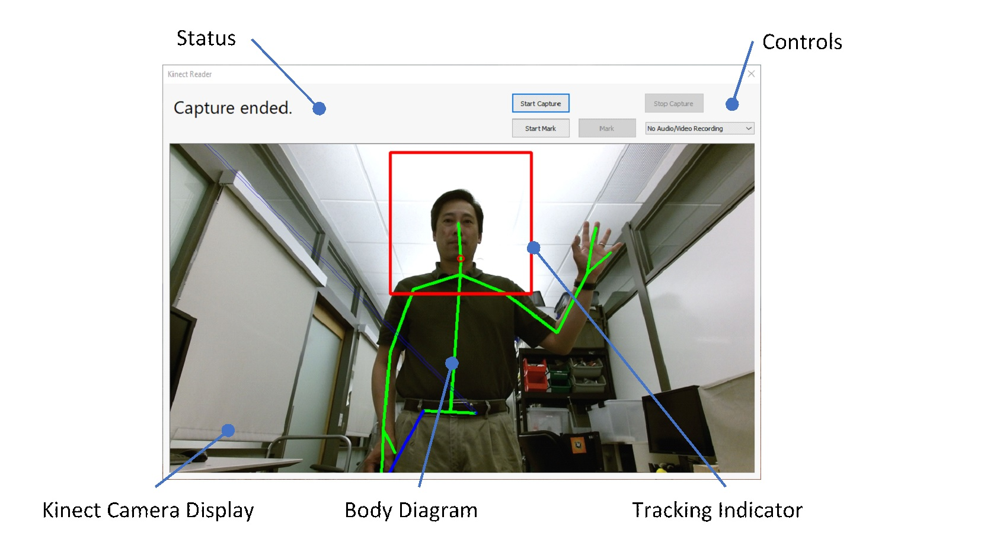

Microsoft Applied Robotics Research Library
Microsoft Applied Robotics Research Library
Open Source Samples for Service Robotics

KinectReader User Manual
Introduction
The KinectReader tool is provided as a Windows binary application that uses a Kinect sensor to capture upper-torso human gestures as body movement tracking sequences and optionally audio/video. Captured gestures can be edited using the KinectCaptureEditor application and are suitable for conversion to Labanotation using the LabanEditor application.
Tested System Hardware and Software
- Microsoft Windows 10, 64-bit
- Microsoft Kinect Sensor v2 for Windows
- Microsoft Kinect SDK v2.0 or newer for Kinect Sensor v2 (https://www.microsoft.com/en-us/download/details.aspx?id=44561)
- OpenCV Version 3.4.3 for Windows (https://sourceforge.net/projects/opencvlibrary/files/opencv-win/3.4.3/opencv-3.4.3-vc14_vc15.exe/download)
- Microsoft Visual C++ Runtime Library (https://aka.ms/vs/16/release/vc_redist.x64.exe)
Installation
Download the entire KinectReader folder to your local machine - If needed, edit the file KinectReader.ini and set the DataDir property to a folder where the capture session data will be written. See INI File section below - Locate and place a copy of the OpenCV file opencv_world343.dll into the application folder, or add the existing location to your system's Path using Windows' Advanced System Properties control panel to set an Environment Variable.
Example Use
The user wishes to create a set of reference gestures with associated audio and video. - Launch the KinectReader app. - From the drop-down control on the right, select Record Audio & Video. - Click on Start Capture. - Perform each gesture and vocally name the gesture. - Click on Stop Capture. - The Kinect body data frames are saved to joints.csv and the audio/video recording is saved to videorecording.wmv.
Starting Up and Shutdown
- To run, double-click KinectReader.exe.
- To exit, click on the close button at the top of the window or press Alt+F4 and click Yes on the close confirmation message box.
The User Interface
The main application windows has three main areas: the Kinect camera display, status, and controls. 
Kinect Camera Display
The Kinect Camera Display at the bottom displays the color image from the Kinect sensor overlaid with a diagram of the body tracking data for each person being tracked by the camera. Segments recognized by the Kinect sensor are green and inferred segments are blue. Segments that are not recognized are not shown. A red box highlights the person whose body tracking data will be recorded. If the wrong person is being tracked, click on the head of the correct person.
Status
The Status area at the top-left displays messages such as a capture session is active and when a frame is captured.
Controls
The Controls area at the top-right configure and control a recording session.
 - The media drop-down control specifies whether to record audio & video, audio-only, or not at all along with the Kinect data.
- The Start Capture button begins a continuous capture session.
- The Start Mark button begins a frame-by-frame capture session. A Kinect data frame is only captured when the Mark button is pressed.
- The Stop Capture button stop the capture session and records the Kinect data, audio, and video to the output files.
The video is recorded from the Kinect’s color camera and the audio is recorded from the system default audio input device. Set the input audio device or adjust the audio input level using the Windows Sound settings or control panel.
- The media drop-down control specifies whether to record audio & video, audio-only, or not at all along with the Kinect data.
- The Start Capture button begins a continuous capture session.
- The Start Mark button begins a frame-by-frame capture session. A Kinect data frame is only captured when the Mark button is pressed.
- The Stop Capture button stop the capture session and records the Kinect data, audio, and video to the output files.
The video is recorded from the Kinect’s color camera and the audio is recorded from the system default audio input device. Set the input audio device or adjust the audio input level using the Windows Sound settings or control panel.
Capture Sessions
A continuous capture session records Kinect data frames, audio, and video as they are supplied by the Kinect sensor. A frame-by-frame capture session records a Kinect data frame only when the Mark button is clicked. When enabled, audio/video is recorded continuously for either session type. The session files are saved to the directory specified by the DataDir property: - The Kinect data frames are saved to joints.csv. - When recording both audio and video, the recording is saved to videorecording.wmv. - When recording audio only, the recording is saved to audiorecording.wma.
Reference
Keyboard Shortcuts
| Keys | Description |
|---|---|
| Alt+F4 | Exit the application |
| ## INI File | |
| [Section] Property=Value | Type |
| -- | -- |
| [main] | |
| DataDir= | String |
| ## Kinect Body Data File Format | |
| The Kinect body data file is a Comma-Separated Values (CSV) text file (*.csv). A data frame is a line of text terminated by a CR/LF pair and consists of a series of fields separated by commas (“,”). Each field is the C programming language printf()-style text representation of the value. The fields are the following: |
| Field | Type | Description |
|---|---|---|
| Timestamp | Integer | Kinect sensor timestamp in hundred-nanosecond units (10,000,000 units = 1 second.) The absolute value of the timestamp has no meaning but the timestamp allows calculating the elapsed time between frames and ordering frames by when they were captured. |
| Joint Array | Tracked Joint | A series of Tracked Joint entries, one per each of 25 joints. |
| The fields that make up the Joint Array immediately follow the Timestamp field. Each set of four fields form a Tracked Joint entry, one per each of 25 joints. There is no special delineation between entries in the array nor between each field in each entry beyond the standard comma. The Tracked Joint fields are: |
| Field | Type | Description |
|---|---|---|
| X | Float | X coordinate of the joint in Kinect camera space |
| Y | Float | Y coordinate of the joint in Kinect camera space |
| Z | Float | Z coordinate of the joint in Kinect camera space |
| Tracking State | Integer | 0 = joint is not tracked, 1 = joint position is inferred (estimated), 2 = joint is tracked |
Kinect camera space is defined as follows: - The origin (X = 0, Y = 0, Z = 0) is at the center of the Kinect’s IR sensor - X increases to the sensor’s left, from the sensor looking at the joint - Y increases towards the sensor’s top - Z increases away from the sensor to the joint - Each whole unit is one meter (1.0 units = 1.0 meters)
See the Microsoft documentation Kinect for Windows SDK 2.0, “Programming Guide”, “Coordinate mapping” for more details.
The joints appear in the Joint Array in this order: 1. Spine Base 1. Spine Midsection 1. Neck 1. Head 1. Left Shoulder 1. Left Elbow 1. Left Wrist 1. Left Hand 1. Right Shoulder 1. Right Elbow 1. Right Wrist 1. Right Hand 1. Left Hip 1. Left Knee 1. Left Ankle 1. Left Foot 1. Right Hip 1. Right Knee 1. Right Ankle 1. Right Foot 1. Spine Shoulder 1. Left Hand Tip 1. Left Thumb 1. Right Hand Tip 1. Right Thumb